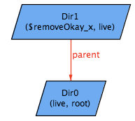
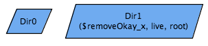

The scope 2 counterexample for removeOkay and removeAllOkay is the same:
 -> 
In the pre state, Dir0 is the root, and Dir1 is the directory to be removed. So far so good. In the post state, indeed there is no longer a parent relationship between Dir0 and Dir1. However, Dir1 is chosen as the new root!
Why can this happen? First, let's note that both remove and removeAll predicates cause the rows of the parent relation in the post-state to be a subset of the rows in the pre-state. And we know the FileSystem appended facts "live in root.*contents" constrains the root of the file system to be the root of the contents relation. So if the post-state has a non-empty contents relation, it will have the same root as the pre-state. However if delete function causes the post-state to have an empty contents relation, then the root is free to change arbitrarily, to any directory available. Bet you didn't see that coming. Good thing we wrote a model!
We can amend our delete functions to stipulate that the root stays the same. The amended delete functions look as follows:
pred remove [fs, fs': FileSystem, x: FSObject] {
x in (fs.live - fs.root)
fs'.root = fs.root
fs'.parent = fs.parent - x->(x.(fs.parent))
}
and
pred removeAll [fs, fs': FileSystem, x: FSObject] {
x in (fs.live - fs.root)
fs'.root = fs.root
let subtree = x.*(fs.contents) |
fs'.parent = fs.parent - subtree->(subtree.(fs.parent))
}
When we check the assertions up to a scope of 5, Alloy finds no counterexamples. We can be fairly certain that our predicates work as intended.
As one final sanity check, let's verify that remove and removeAll are equivalent when the deleted object is a file:
removeAllSame: check {
all fs, fs1, fs2: FileSystem, f: File |
remove[fs, fs1, f] && removeAll[fs, fs2, f] => fs1.live = fs2.live
} for 5
Alloy finds no counterexamples, thus further reassuring us that the remove predicates functions were written correctly and that the system we are modeling does not have errors. The final version of the model is in the upper righthand frame.